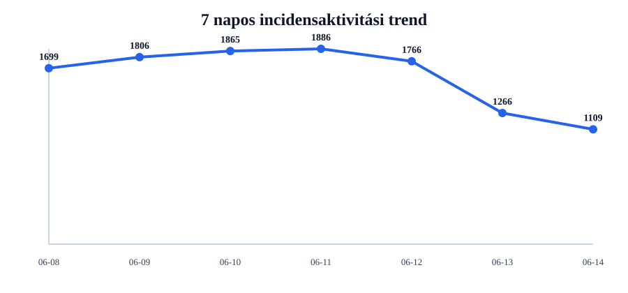
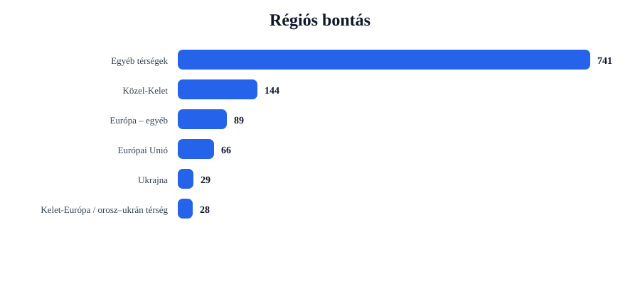
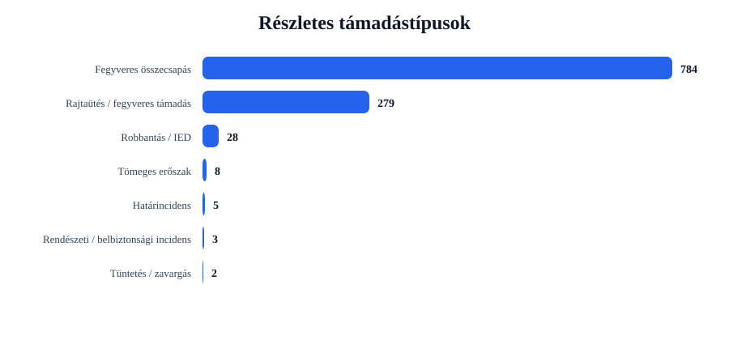
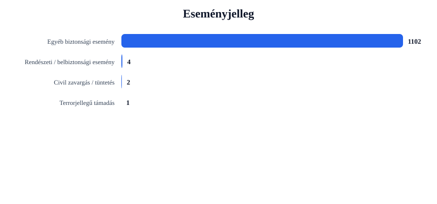

Rövid napi értékelés
Az incidensek száma csökkent: -157 esemény, 12.4% visszaesés.
A legtöbb találat ehhez az országhoz kapcsolódott: United States (288 esemény).
A legerősebb regionális súlypont: Egyéb térségek (741 esemény).
A leggyakoribb részletes támadástípus: Fegyveres összecsapás (784 találat).
A leggyakoribb eseményjelleg: Egyéb biztonsági esemény (1102 találat).
A drón-, terrorjellegű és háborús események felismerése kulcsszavas besorolással történik. Ez jó elemzési szűrő, de kézi ellenőrzést továbbra is igényelhet.
Régiós helyzetkép
Európai Unió
Azonosított események száma: 66. Leginkább érintett országok: France (16), Ireland (9), Germany (8).
Domináns támadástípusok: Fegyveres összecsapás (43), Rajtaütés / fegyveres támadás (20), Tömeges erőszak (2). Domináns eseményjelleg: Egyéb biztonsági esemény (65), Terrorjellegű támadás (1).
| Cím | Ország | Helyszín | Részletes típus | Eseményjelleg | Forrás |
|---|---|---|---|---|---|
| fight – Hildesheim, Niedersachsen, Germany | Germany | Hildesheim, Niedersachsen, Germany | Robbantás / IED | Terrorjellegű támadás | www.thetablet.co.uk |
| fight – France | France | France | Fegyveres összecsapás | Egyéb biztonsági esemény | home.nzcity.co.nz |
| fight – Paris, France (general), France | France | Paris, France (general), France | Fegyveres összecsapás | Egyéb biztonsági esemény | www.aljazeera.com |
| fight – Spain | Spain | Spain | Fegyveres összecsapás | Egyéb biztonsági esemény | www.el-balad.com |
| fight – Germany | Germany | Germany | Fegyveres összecsapás | Egyéb biztonsági esemény | www.thisdaylive.com |
Ukrajna
Azonosított események száma: 29. Leginkább érintett országok: Ukraine (29).
Domináns támadástípusok: Robbantás / IED (17), Fegyveres összecsapás (7), Rajtaütés / fegyveres támadás (4). Domináns eseményjelleg: Egyéb biztonsági esemény (29).
| Cím | Ország | Helyszín | Részletes típus | Eseményjelleg | Forrás |
|---|---|---|---|---|---|
| fight – Kherson, Khersons'ka Oblast', Ukraine | Ukraine | Kherson, Khersons'ka Oblast', Ukraine | Robbantás / IED | Egyéb biztonsági esemény | www.yahoo.com |
| fight – Dnipropetrovsk, Dnipropetrovs'ka Oblast', Ukraine | Ukraine | Dnipropetrovsk, Dnipropetrovs'ka Oblast', Ukraine | Robbantás / IED | Egyéb biztonsági esemény | www.bozemandailychronicle.com |
| fight – Vovchansk, Kharkivs'ka Oblast', Ukraine | Ukraine | Vovchansk, Kharkivs'ka Oblast', Ukraine | Robbantás / IED | Egyéb biztonsági esemény | www.dailykos.com |
| fight – Kramatorsk, Donets'ka Oblast', Ukraine | Ukraine | Kramatorsk, Donets'ka Oblast', Ukraine | Robbantás / IED | Egyéb biztonsági esemény | www.dailykos.com |
| fight – Kostyantynivka, Donets'ka Oblast', Ukraine | Ukraine | Kostyantynivka, Donets'ka Oblast', Ukraine | Robbantás / IED | Egyéb biztonsági esemény | www.rightspeak.net |
Balkán
Azonosított események száma: 12. Leginkább érintett országok: Turkey (5), Serbia (general) (2), Albania (2).
Domináns támadástípusok: Fegyveres összecsapás (7), Rajtaütés / fegyveres támadás (3), Tömeges erőszak (2). Domináns eseményjelleg: Egyéb biztonsági esemény (12).
| Cím | Ország | Helyszín | Részletes típus | Eseményjelleg | Forrás |
|---|---|---|---|---|---|
| fight – Ankara, Ankara, Turkey | Turkey | Ankara, Ankara, Turkey | Fegyveres összecsapás | Egyéb biztonsági esemény | www.inewsgr.com |
| fight – Turkey | Turkey | Turkey | Fegyveres összecsapás | Egyéb biztonsági esemény | www.swindonadvertiser.co.uk |
| fight – Kocaeli, Balikesir, Turkey | Turkey | Kocaeli, Balikesir, Turkey | Fegyveres összecsapás | Egyéb biztonsági esemény | www.dailysabah.com |
| assault – Istanbul, Istanbul, Turkey | Turkey | Istanbul, Istanbul, Turkey | Rajtaütés / fegyveres támadás | Egyéb biztonsági esemény | aa.com.tr |
| assault – Turkey | Turkey | Turkey | Rajtaütés / fegyveres támadás | Egyéb biztonsági esemény | athens-times.com |
Közel-Kelet
Azonosított események száma: 144. Leginkább érintett országok: Israel (33), Iran (26), Lebanon (13).
Domináns támadástípusok: Fegyveres összecsapás (104), Rajtaütés / fegyveres támadás (36), Tömeges erőszak (3). Domináns eseményjelleg: Egyéb biztonsági esemény (143), Civil zavargás / tüntetés (1).
| Cím | Ország | Helyszín | Részletes típus | Eseményjelleg | Forrás |
|---|---|---|---|---|---|
| fight – Iran | Iran | Iran | Fegyveres összecsapás | Egyéb biztonsági esemény | theconservativetreehouse.com |
| fight – Iraq | Iraq | Iraq | Fegyveres összecsapás | Egyéb biztonsági esemény | theconservativetreehouse.com |
| fight – Tehran, Tehran, Iran | Iran | Tehran, Tehran, Iran | Fegyveres összecsapás | Egyéb biztonsági esemény | www.cjme.com |
| fight – Gaza, Israel (general), Israel | Israel | Gaza, Israel (general), Israel | Fegyveres összecsapás | Egyéb biztonsági esemény | www.aol.co.uk |
| fight – Israel | Israel | Israel | Fegyveres összecsapás | Egyéb biztonsági esemény | www.newsx.com |
Kelet-Európa / orosz–ukrán térség
Azonosított események száma: 28. Leginkább érintett országok: Russia (28).
Domináns támadástípusok: Fegyveres összecsapás (13), Robbantás / IED (10), Rajtaütés / fegyveres támadás (5). Domináns eseményjelleg: Egyéb biztonsági esemény (28).
| Cím | Ország | Helyszín | Részletes típus | Eseményjelleg | Forrás |
|---|---|---|---|---|---|
| fight – Lugansk, Novosibirskaya Oblast', Russia | Russia | Lugansk, Novosibirskaya Oblast', Russia | Robbantás / IED | Egyéb biztonsági esemény | www.yahoo.com |
| fight – Zapad, Irkutskaya Oblast', Russia | Russia | Zapad, Irkutskaya Oblast', Russia | Robbantás / IED | Egyéb biztonsági esemény | www.globalsecurity.org |
| fight – Volgograd, Volgogradskaya Oblast', Russia | Russia | Volgograd, Volgogradskaya Oblast', Russia | Robbantás / IED | Egyéb biztonsági esemény | www.dailykos.com |
| assault – Novomoskovsk, Tul'skaya Oblast', Russia | Russia | Novomoskovsk, Tul'skaya Oblast', Russia | Robbantás / IED | Egyéb biztonsági esemény | eaworldview.com |
| assault – Rybinsk, Yaroslavskaya Oblast', Russia | Russia | Rybinsk, Yaroslavskaya Oblast', Russia | Robbantás / IED | Egyéb biztonsági esemény | eaworldview.com |
Európa – egyéb
Azonosított események száma: 89. Leginkább érintett országok: United Kingdom (80), Switzerland (5), Norway (3).
Domináns támadástípusok: Fegyveres összecsapás (62), Rajtaütés / fegyveres támadás (27). Domináns eseményjelleg: Egyéb biztonsági esemény (89).
| Cím | Ország | Helyszín | Részletes típus | Eseményjelleg | Forrás |
|---|---|---|---|---|---|
| assault – Belfast, Belfast, United Kingdom | United Kingdom | Belfast, Belfast, United Kingdom | Rajtaütés / fegyveres támadás | Egyéb biztonsági esemény | www.aol.co.uk |
| fight – Belfast, Belfast, United Kingdom | United Kingdom | Belfast, Belfast, United Kingdom | Fegyveres összecsapás | Egyéb biztonsági esemény | www.aol.co.uk |
| assault – London, London, City of, United Kingdom | United Kingdom | London, London, City of, United Kingdom | Rajtaütés / fegyveres támadás | Egyéb biztonsági esemény | www.dailymail.com |
| fight – United Kingdom | United Kingdom | United Kingdom | Fegyveres összecsapás | Egyéb biztonsági esemény | www.tvguide.co.uk |
| fight – Geneva, Genè, Switzerland | Switzerland | Geneva, Genè, Switzerland | Fegyveres összecsapás | Egyéb biztonsági esemény | www.dw.com |
Egyéb térségek
Azonosított események száma: 741. Leginkább érintett országok: United States (288), India (89), Nigeria (82).
Domináns támadástípusok: Fegyveres összecsapás (548), Rajtaütés / fegyveres támadás (184), Határincidens (5). Domináns eseményjelleg: Egyéb biztonsági esemény (736), Rendészeti / belbiztonsági esemény (4), Civil zavargás / tüntetés (1).
| Cím | Ország | Helyszín | Részletes típus | Eseményjelleg | Forrás |
|---|---|---|---|---|---|
| fight – United States | United States | United States | Fegyveres összecsapás | Egyéb biztonsági esemény | abc11.com |
| fight – China | China | China | Fegyveres összecsapás | Egyéb biztonsági esemény | myhostnews.com |
| fight – New York, United States | United States | New York, United States | Fegyveres összecsapás | Egyéb biztonsági esemény | www.therecord.com |
| fight – Texas, United States | United States | Texas, United States | Fegyveres összecsapás | Egyéb biztonsági esemény | abc11.com |
| fight – California, United States | United States | California, United States | Fegyveres összecsapás | Egyéb biztonsági esemény | www.wccbcharlotte.com |
Grafikonos áttekintés




Top 5 kiemelt esemény
| # | Cím | Ország | Helyszín | Részletes típus | Eseményjelleg | Súly | Forrás |
|---|---|---|---|---|---|---|---|
| 1 | fight – Hildesheim, Niedersachsen, Germany | Germany | Hildesheim, Niedersachsen, Germany | Robbantás / IED | Terrorjellegű támadás | 26 | www.thetablet.co.uk |
| 2 | fight – Kherson, Khersons'ka Oblast', Ukraine | Ukraine | Kherson, Khersons'ka Oblast', Ukraine | Robbantás / IED | Egyéb biztonsági esemény | 18 | www.yahoo.com |
| 3 | fight – Dnipropetrovsk, Dnipropetrovs'ka Oblast', Ukraine | Ukraine | Dnipropetrovsk, Dnipropetrovs'ka Oblast', Ukraine | Robbantás / IED | Egyéb biztonsági esemény | 18 | www.bozemandailychronicle.com |
| 4 | fight – Vovchansk, Kharkivs'ka Oblast', Ukraine | Ukraine | Vovchansk, Kharkivs'ka Oblast', Ukraine | Robbantás / IED | Egyéb biztonsági esemény | 18 | www.dailykos.com |
| 5 | fight – Kramatorsk, Donets'ka Oblast', Ukraine | Ukraine | Kramatorsk, Donets'ka Oblast', Ukraine | Robbantás / IED | Egyéb biztonsági esemény | 18 | www.dailykos.com |
Napi bontások
Régiók
- Egyéb térségek741
- Közel-Kelet144
- Európa – egyéb89
- Európai Unió66
- Ukrajna29
- Kelet-Európa / orosz–ukrán térség28
- Balkán12
Országok
- United States288
- India90
- Nigeria82
- United Kingdom80
- Israel33
- Pakistan31
- Ukraine29
- Russia28
- Iran26
- Australia20
Részletes típusok
- Fegyveres összecsapás784
- Rajtaütés / fegyveres támadás279
- Robbantás / IED28
- Tömeges erőszak8
- Határincidens5
- Rendészeti / belbiztonsági incidens3
- Tüntetés / zavargás2
Eseményjelleg
- Egyéb biztonsági esemény1102
- Rendészeti / belbiztonsági esemény4
- Civil zavargás / tüntetés2
- Terrorjellegű támadás1
Források
- www.dailymail.com36
- www.globalsecurity.org25
- www.yahoo.com21
- www.dailykos.com21
- timesofindia.indiatimes.com21
- organiser.org20
- punchng.com20
- dailypost.ng20
- blueprint.ng18
- www.rediff.com18
Blogra használható összefoglaló kép
Ez az automatikusan generált kép csak a négy kiemelt térséget mutatja: Európai Unió, Balkán, Közel-Kelet és Ukrajna.
Módszertani megjegyzés
Ez a jelentés nyílt forrású, automatizált adatgyűjtés alapján készül. A dróntámadások, terrorjellegű események és háborús cselekmények azonosítása kulcsszavas besorolással történik. Ez elemzési támpont, nem hivatalos minősítés.